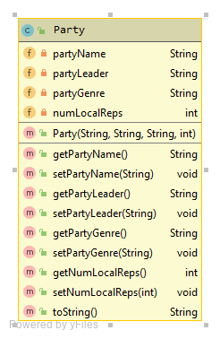

Readme
Based on materials contained in the first 5 topics of slide decks and labs. It is worth 50% of your overall grade for the module.
Similar(ish) Project
In your previous labs, you worked on a Shop project. Your assignment will be similar(ish) to this project but will incorporate more concepts and require you to develop your own algorithms to solve some of the requirements given to you.
The solution to the Shop V5.0 project can be found here.

The responsibility of the Product class is to manage a single product.
The responsibility of the Store class is to manage an ArrayList of Products.
The Assignment
You are tasked with developing a EUApp.
This EUApp will have five classes:
Party: The responsibility for this class is to manage a single (political) party.
PartyList: The responsibility for this class is to store and manage aLL the parties entered by the user via the console (that are parties in the EU)
MEP: The responsibility for this class is to manage a single MEP (Member of European Parliament).
Country: The responsibility for this class is to store and manage ALL the songs entered by the user via the console.
EUDriver: The responsibility for this class is to manage the User Interface (UI) i.e. the menu and user input/ouput.
The instructions for developing the app and the above classes are on the following tabs.
Some key points to remember when coding your assignment
You must use the names given for the Classes and Methods; failure to do so will result in reduced marks.
For all variables, methods and classes used, please adhere to the naming standards discussed in class.
Use internal, helper methods (i.e. private access methods) where appropriate. The interface for your class must match the interface given in the assignment brief. Deviating from the interface will result in reduced marks. Note: the interface here refers to the fields, constructors and methods that are visible outside the class.
Your classes and methods should be Javadoc commented.
Don't forget that you can get IntelliJ to generate methods such as getters, setters, constructors and toString. It is a good idea to generate these methods and then add the additional requirements (such as validation) manually. This will free up some time for concentrating on other areas of the assignment.
There should be absolutely NO System.out.println or Scanner reads in any class except for Driver. If you have any such interaction with the user in any class other than Driver, you will loose marks. Instead, you should be returning information back to Driver to print it. Or passing information read in Driver to other classes via method parameters.
Driver class
The UML for the EuDriver class is here:
The responsibility of this class is to run the app and perform I/O with the user. It is the only class that should have:
- System.out.print statements
- Scanner objects defined.
Fields
There are three private fields in the EUDriver class:
- input: This is an object of the Scanner class.
- euCountries: This is a collection (ArrayList) of the Country class.
- partyList: This is an object of the PartyList class.
Instantiate each of these fields at variable declaration time. Also, there is no validation on any of these fields.
main method
The main method has one line of code:
new EUDriver();Constructor
We will write a default constructor for this class. There is two lines of code in this method:
public EUDriver() {
euCountries = new ArrayList<Country>();
runMenu(); }We will also write a second constructor for this class. This is for use with tests (when we do not need to run the runMenu() method)
public EUDriver(int i) {
euCountries = new ArrayList<Country>();
}Menu Displayed
Using the same approach adopted when deveoping the Shop projets, the following menu is continually displayed to the user:

Note that the mainMenu() method displays the above menu and returns the user choice. The runMenu method is the one that contains the switch statement that processes the user choice.
Option 1 - Add a Country
Create an addCountry() method in Driver. This method asks the user to enter the country name, and number of seats. The entered country is then stored in the ArrayList of coutries (i.e. euCountries).
Option 2 - Delete a country
Create an deleteCountry() method in Driver. This method firstly lists the currently stored euCountries and then asks the user to enter the index of the country to be deleted. If possible, the country is deleted, otherwise print "There is no Country for this index number" to the console
Option 3 -Update a country (by index)
Create an updateCountry() method in Driver. This method lists all the countries (hint: we used this method in option 2). If there are:
countries in the list, ask the user to enter the index number of the country to update. Then, provided that the index number is valid, the Country's details are changed to the values that the user inputs.
no countries in the list, the following message is displayed: "There is no Country for this index number"
Option4
Calls the listOfCountries method. This method shoulld return (as a String), the list of countries currently registered as EU members. The String that is returned is printed to the console.
Within a Country
Option 5 - Add an MEP
Create an addMEP() method in Driver.
This method first asks the user to enter the MEP name, phone number, email, and party.
The song is then stored in the ArrayList of countries (i.e. euCountries).
Option 6 - Delete an MEP
Calls the deleteMEP() method in the euDriver class. This method firstly lists the currently stored euCountries and then asks the user to enter the index of the country from where the MEP is to be deleted. If this country exists, then the lsit of current MEP's in this country is printed to the console. The user is then asked for the index of the MEP to be deleted. If it's a valid index, then the MEP is deleted, otherwise print "There is no MEP for this index number" to the console
Option 7 - Update an MEP
Create an updateMEP() method in Driver. This method lists all the MEPs. If there are:
MEPs in the list, ask the user to enter the index number of the country to update. Then, provided that the index number is valid, the MEP's details are changed to the values that the user inputs.
no MEPs in the list, the following message is displayed: "There is no MEP for this index number"
Option 8 - List all MEPs by country
Create a listMEPSOfCountry() method in Driver. The method should ask the user to enter the country. The String that is returned is printed to the console.
Party Menu
Option 9 Add a new Party
Create an addParty() method in Driver.
This method first asks the user to enter the Party name, leader, genre (one of "RIGHT", "LEFT", "EXTREME RIGHT", "EXTREME LEFT", "CENTRE", or "UNCATEGORISED"), and number of local representatives.
The party is then added to the PartyList collection using the addParty method in PartyList.
Option 10 - Delete a Party
Calls the deleteParty() method in the euDriver class. This method firstly lists the currently stored parties in the partylist object and then asks the user to enter the index of the party to be deleted. If it's a valid index, then the party is deleted, otherwise print "There is no party for this index number" to the console
Option 11 Update a Party
Create an updateParty method in Driver. This method lists all the Party's. If there are:
party's in the list, ask the user to enter the index number of the party to update. Then, provided that the index number is valid, the party's details are changed to the values that the user inputs.
no Party's in the list, the following message is displayed: "There is no Party for this index number"
Option 12 - List all Parties
Create a listOfParties() method in the PartyList class. This method lists all the parties. This method shoud return a String which is then printed to the console.
Reporting Menu
Option 13 - Calculate and print the party with the most local Representatives
Create a largestParty() method in the PartyList class. This method calculate the party with the largest number of local representatives. This method shoud return this Party(object) which is then printed to the console (using toString())
Option 14 - Calculate and print the party with the most MEP's
Create a mostMEPs() method in the PartyList class. This method calculate the party with the largest number of MEPs. This method shoud return this Party(object) which is then printed to the console (using toString())
Option 15 - List all parties of a given Genre
Create a listPartyByGenre() method in the Driver class. This method should invite the user to enter the genre. This method will then call a PartyList method (you should write) called listPartiesBySpecificGenre which returns the list a a String. It is then printed to the console.
Option 16 - List all MEPs of a given party
Create a listMEPsbyPartyName() method in the Driver class. This method should invite the user to enter the party name. This method will then call a PartyList method (you should write) called listMEPsbySpecificParty which returns the list a a String. It is then printed to the console.
Option 20 - Save to XML
This method will save both lists (the euCountries and the partyList) to an XML file.
Option 21 - Load from XML
This method will load both lists (the euCountries and the partyList) form the XML file that was created in Option 10.
Option 0 - Exit
This option exits the application.
Mep class
The UML for the Mep class is here:

The responsibility for this class is to manage a single MEP (Member of European Parliament).
Fields
There are four private fields in the MEP class. The validation on these fields is as follows:
MEPName: The MEP name is maximum 30 characters.
MEPEmail: must contain a @ and a .. If it doesn't, store "invalid format email".
MEPPhone: should only contain numbers. If it contains any characters other than numbers, store "unknown".
MEPParty: This party should be from the current partyList in the Driver.
Constructor
There is one constructor that should have the same method signature as the diagram above. The constructor should enforce the validation rules outlined for each field above. The constructor needs the current set of party lists so that the party can be validated.
Methods (getters and setters)
Each of the above fields will have a getter and a setter. The setters should adhere to the validation rules outlined above. Remember that a setter should not apply a default value i.e. if an invalid email is entered, do not overwrite the existing stored email with "invalid format email".
Party class
The UML for the party class is here:

The responsibility for this class is to manage a single (political) party.
Fields
There are four private fields in the Party class. The validation on these fields is as follows:
partyName: The party name is maximum 30 characters.
partyGenre: must be one of the following:
- RIGHT
- LEFT
- EXTREME RIGHT
- EXTREME LEFT
- CENTRE
- UNCATEGORISED
unknown (if any of the above hasn't be entered by the user)
When using the setter for this field, the setter to allow change if genre is correct or correct with incorrect case (e.g. leFT), otherwise remain unchanged.
numLocalReps: the number of local representatives a party has (e.g. in Ireland- the number of TDs, in UK - the number of MPs etc). This should be non-negative.
Constructor
There is one constructor that should have the same method signature as the diagram above. The constructor should enforce the validation rules outlined for each field above.
Methods (getters and setters)
Each of the above fields will have a getter and a setter. The setters should adhere to the validation rules outlined above. Remember that a setter should not apply a default value i.e. if an negative value for numLocalReps is entered, do not overwrite the existing stored numLocalReps. toString() should also be written.
Country class
The UML for the country class is here:
The responsibility for this class is to manage a single country.
Fields
There are three private fields in the MEP class. The validation on these fields is as follows:
name: The country name is maximum 30 characters.
meps: A collection (ArrayList) of Mep's.
noMEPs: This is the (max) number of Mep's that a country is allowed. This should be non-negative.
Constructor
There is one constructor that should have the same method signature as the diagram above. The constructor should enforce the validation rules outlined for each field above.
Methods (getters and setters)
Each of the above fields will have a getter and a setter. The setters should adhere to the validation rules outlined above. Remember that a setter should not apply a default value. the toString() shoould be written.
addMEP(Mep mep)
This should add an Mep to this Country
getMEP(int i)
this should return the Mep object at this position (if it exists), null otherwise.
removeMEP(int i)
this should remove the Mep object at position i (if it exists). If a sucessful delete takes place, then return true, otherwise false.
numberOfMEPs()
this should return the number of MEP's currently added to this Country
listOfMEPs()
this should return (as a String) the list of MEPs currently added to this Country
listOfMEPsByParty(Party party)
this should return (as a String) the list of MEPs currently added to this Country that are members of the supplied Party.
noOfMEPsByParty(Party party)
this should return the number of MEPs currently added to this Country that are members of the supplied Party.
PartyList class
The UML for the PartyList class is here:
The responsibility for this class is to manage a single PartyList.
Fields
There is one private field in the PartyList class. No validation here.
- parties:
Constructor
There is one constructor that should have the same method signature as the diagram above. The constructor should enforce the validation rules outlined for each field above.
Methods (getters and setters)
The above field will have a getter and a setter. You should write a toString().
addParty(Party party)
This should add the given party to the PartyList.
getParty(int index)
This should return the Party object at the index position (if it exists), null otherwise.
removeParty(int index)
This should remove the Party object at the index position (if it exists) and return true, return false otherwise (if index is invalid).
numberOfParties()
This should return the current number of parties in the PartyList.
listOfParties()
This should return (as a String) the list of parties currently added to the PartyList.
listPartiesBySpecificGenre(String genre)
This should return (as a String) the current list of parties which have the given genre.
largestParty()
This should return the Party object from the current list who has the largest number of local representatives.
mostMEPs(ArrayList euCOuntries)
This should return the party object which has the most MEPs in the euCountries collection.
Utilities class
The UML for the Utilities class is here:
The responsibility for this class is to manage a single Utilities.
For details on the utilities methods, examine the test classes.
onlyContainsNumbers(String text)
This method is given using regex. You may use this in your assignment.
static boolean onlyContainsNumbers(String text) {
return (text.matches("[0-9]+"));
}JUnit
NOTE: YOU DO NOT HAVE TO DO THIS STEP IF YOU DON'T WANT TO. THERE ARE NO ADDITIONAL MARKS IN THE MARKING SCHEME FOR DOING THIS. HOWEVER, IT WILL HELP YOU IDENTIFY AND FIX BUGS IN YOUR CODE, THEREBY INCREASING YOUR GRADE.
For correcting your assignments, we have written four automated test classes:
- PartyTest: This class exhaustively tests the methods in the Party class.
- MepTest: This class exhaustively tests the methods in the Mep class.
- PartyListTest: This class tests all methods, except load and store in the PartyList class.
- CountryTest: This class tests all methods, except load and store in the Countryclass
- UtilitiesTest: This class tests all Utilities methods
- EUDriver : This class tests most EUDriver methods. This will be updated in the coming week.
- We will be running these classes over your submitted assignment and correcting based on the results of the tests. We are releasing them to you so that, prior to submitting your work, you can pre-correct your assignment and make changes / fix your code based on the output of the tests.
The test classes are available here. THese have been updated 24/10 to tidy up and add more tests to help you in EUDriver.
The following steps will show you how to incorporate these into your assignment.
Creating a Test Folder
In your IntelliJ project, right click on your project name. When the context menu appears, select New --> Directory. Call the new directory test.
Note that the src folder is blue in colour and the test one is grey:
We need to 'mark' this directory as a test source folder. To do this, right click on the new test folder and when the context menu appears, select Mark Directory as --> Test Sources Root:
Your test directory should now be green in colour.
Creating a test class
Instead of generating test classes, you should drag in the supplied test classes.
You will notice that a lot of errors exist in the newly added test classes in relation to the JUnit imports annotations and the assert methods:

We need to add JUnit to our classpath so that these imports and methods can be recognised. To do this, click on one of the JUnit imports that is causing an error. Click on the red lightbulb that appears and then select Add Junit4 to Classpath:
Your test class should have no syntax errors now (assuming you have writen all the methods in the class and followed all of our naming laid out in the assignment).
Running your test class
To run the test class, right click on the test folder and select Run --> All Tests.
A new window will appear, reporting the results of the tests. In our case here, all our tests passed:

If you have failing tests, the output could look something like this:

Fixing Errors
If your test class is not compiling i.e. has syntax errors, resist the urge to change the code in the test class. Instead return to your classes and update your code. Typical things that could be wrong in your code include:
- class name different (check case sensitivity)
- method names different (check case sensitivity)
- missing methods in your code
- wrong return types in your methods
- etc....
If your test class is compiling but is failing on tests, maybe there is an issue with:
validation e.g.:
- validation not included as speced
- validation only done at constructor level
- only the if part is included (no else)
- maybe you are checking different values to the test class e.g. > 0 instead of >= 0
- etc.
requirements missed e.g.
- maybe you forgot to include all the requirements for a specific method e.g. in the list methods, you typically should have three return statements...maybe you don't have them all included.
general bugs e.g.
- maybe you are updating the wrong field by accident
- maybe you are forgetting to update something
- so many different things can go wrong here!
As you make changes to your code, keep running the tests to see your progress.
Remaining test classes
Follow the same procedure as above to include the remaining test classes:
Note: In order to run EUDriver test, we have used an alterative EUDriver constructor
public EUDriver(int x) {
euCountries = new ArrayList<Country>();
// runMenu();
}i.e. we don't run the menu as this waiting for input would interrupt the running of the tests.
Submitting your assignment
When you are ready to submit your assignment:
Rename your project name using the naming convention firstname_surname e.g. maireaed_meagher. (inside IntelliJ)
Zip this folder ensuring that it is called firstname_surname.zip. No WINRARs please!
The deadline for this assignment is 10 pm Sunday, 3rd November 2019.
Interviews
As you know, it is compulsory that you are interviewed on your submission in order to demonstrate both Understanding and Authorship.
These interviews will typically take place in labs the week after submission.
The grade for the interview is a multiplier for your assigment grade. Should you fail to show for your interview, you will receive zero, resulting in an overall grade of zero for your submission.
Indicative Marking Scheme
The marking scheme for the assignment is broken into the following:
Mep Class - 8%
Party Class - 8%
PartyList Class - 20%
Country Class - 15%
Driver (euApp) - 29%
Utilities Class 8%
ScannerInput 2%
Javadoc - 5%
Coding standards, naming, style, etc - 5%
The above totals to 100%.
Extra Credit
Extras - 10% will be available to include extras like including exceptions throughout, robust error handling, etc. This 10% is only available if all other functionalities are attempted and will bring your mark to a maximum of 100%.
Note: If you are making changes to the functionality, it may be the case that the tests will fail for that particular area. In this case, you are permitted to update the tests to reflect this new functionality, but please include a README with your project to indicate that you have done this.
Interviews
The grade for the interview is a multiplier for your assigment grade. Should you fail to show for your interview, you will receive zero, resulting in an overall grade of zero for your submission.
Use of JUnit when developing your code
If your code passes the JUnit tests provided, this means that you will automatically have 65% (interview permitting!) (all 'tested' methods add to 88% but not all driver methods are tested in tests).
Use of the JUnit tests will significantly help you to improve your code. It is worth the effort of getting it up and running and will also be a help to you when we cover it more fully later in the semester. Go for it!